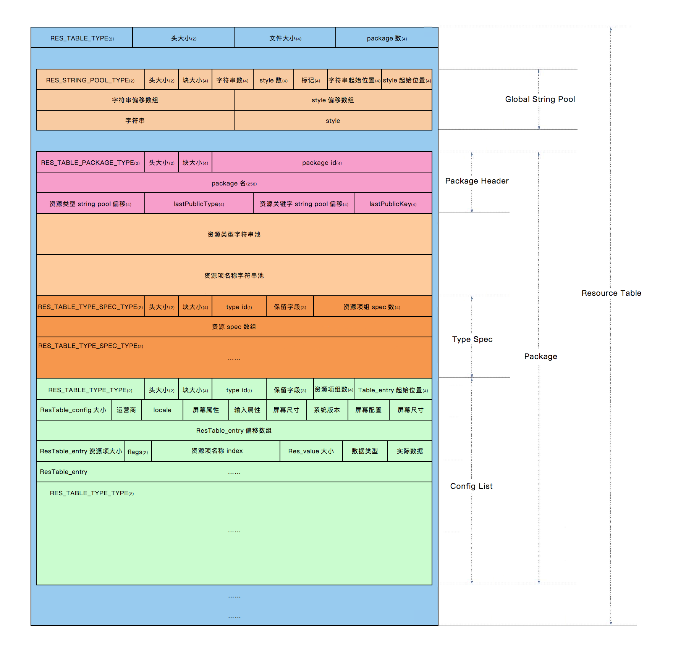
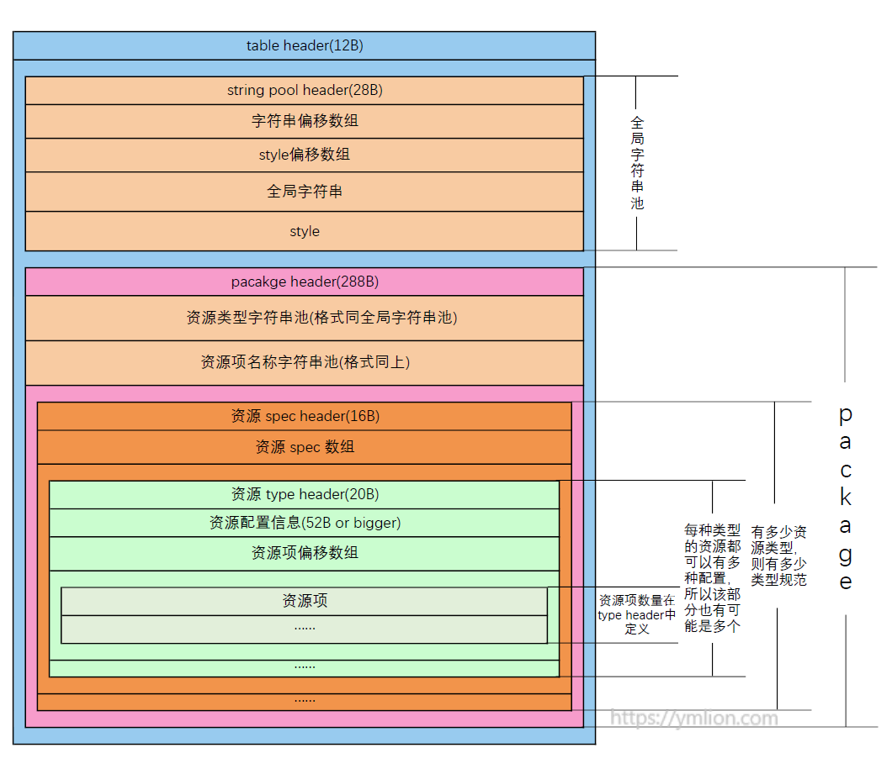

Android插件化实现过程中，同一进程下插件和宿主资源共享和冲突问题像一座山挡住了路，无法避开。在Android中，所有资源都是通过资源id进行引用，因此，要越过这座山，简单可行的解决方法就是修改资源id。资源id是一个int值，四字节，格式是0xPPTTEEEE：
- PP：package id，第一个字节，范围在[0x01, 0x7f]，系统应用为0x01，第三方应用为0x7f；
- TT：type id，第二个字节，一般有十多个类型，像layout、id、drawable、anim等等；
- EEEE：资源在同类型下的索引。
通过对资源id格式的了解，修改资源id最简单的方法是修改package id，不同的插件包设置不同的package id，就很容易实现资源共享和解决资源冲突。通过分析资源编译和打包过程，package id的修改方法也就很明确了，主要有三种：
- 修改
aapt工具源码，在获取package id时进行替换； - 通过
public.xml固定资源id； - 修改
aapt打包生成的资源相关文件，包括resources.arsc、二进制xml、R.java文件等。
相对来说，第一种和第二种实现比较简单，但更不可控，有很多变数在里面，这里就不讨论前两种的实现，主要讨论第三种的实现。在最终的生成文件中，其中类似R.java等文本文件修改最为简单，读一行改一行就可以了，而二进制文件则需要分析其格式，找到对应的资源id位置并修改之。本篇就先来分析资源索引表resources.arsc。
resources.arsc文件结构概览
在网上一直传播着一张图，也是比较详细刻画resources.arsc结构的一张图，先来看下这张图：

整体可以看出，arsc文件是由一个一个的chunk(块)组成，整体是一个table chunk，该表由两大部分组成：
- 全局字符串池
- package chunk：一般情况下每个apk只有一个package，每个package包含了资源类型及每一个资源项
该图将每一chunk的构成甚至每一字节都比较详细列了出来，对于整体结构认识有很大帮助，但也可以看出，在package部分，尤其是在Type Spec及其之后，就有点乱了，对于Type Spec及Type Type之间的关系没有搞清楚。所以，为了更正上面这张图的结构错误，我重新做了一张表，除去了详细信息，主要表现整体结构及每个chunk之间的数量及关系：

通过这张表去了解package数据块中不同数据块的关系，尤其是type spec和type type之间的关系通过第一张图去了解具体数据块的内容，两者相辅相成就把整个arsc文件结构和内容都表现出来了。
chunk header
每一个chunk的前8个字节都是一样的，即chunk头，表明chunk类型、头大小及chunk大小，chunk头的结构定义如下：
1 | internal class ResChunkHeader() { |
数据块类型有很多，主要分为通用性、table类型（即arsc文件中出现的类型）、xml类（即xml文件中用到的类型）。resouces.arsc是一个table chunk（资源索引表），chunk类型为RES_TABLE_TYPE，表头除去chunk头，还有4个字节用于表示package数量，正常情况下是1，就不单独列代码了。
全局资源字符串池
紧接着表头之后，就是全局资源字符串池，类型为RES_STRING_POOL_TYPE，该数据块存放所有资源中用到的字符串值。首先是头部，共28字节，定义如下：
1 | /** |
然后是字符串和样式4字节偏移数组，数量就是ResStringPoolHeader中获取的，记录了每个字符串和样式相对于头部的偏移位置。偏移数组解之后，就是字符串和样式了，先看字符串的结构：
1 | internal class StringPoolString() { |
字符串长度并不固定，除了本身内容不固定，而且不同的编码格式导致字符串长度不固定。其中ResStringPoolHeader.flags变量来确定当前字符串池中的字符串时以UTF-8还是UTF-16来编码的，flags当为0x100，即UTF-8标志位为1，当为0时则是UTF-16，两者主要区别为：
- UTF-8：每个字符占1个字节，
endMark为一个字节，整体前两个字节中的第二个字节表示字符串实际长度； - UTF-16：每个字符占2个字节，第二个字节为0x00，
endMark也是2字节，整体前两个字节表示字符串实际长度，而字符串的所占字节数需要*2。
当编码方式为
UTF-8时，前两个字节的第二个字节是字符串长度，但一个字节最大是127，所以当字符串长度大于127时，会多出一个字节，共两个字节表示，实际计算方法是length = b2 or ((b1 and 0x7f) shl 8)。同样，虽然目前没有发现第一个字节有什么用，但其和第二个字节的变化时相同的，大于127时也会多加一个字节。大部分情况下两个字节是相同的，只有少数特殊字符，第一个字节不对，所以整体以第二个字节为准。
把所有字符串解析完之后，需要进行4字节对齐，对齐之后就是字符串样式，其结构如下：
1 | internal class StringPoolStyle() { |
根据该结构的定义，字符串样式共16字节，样式的名称同样保存在字符串池中，并能够得到该样式应用的起止位置，因此可以得出一个字符串可以对应于多个样式，如斜体、加粗等等，每个样式最后以0xffffffff结尾。
解析完所有字符串样式之后，会以8字节0xff结尾，但字符串池中的styleCount为0，则不会出现。整个字符串池解析完之后，还需要核对一下当前位置是不是整个chunk的结尾，有可能有4个字节的0x00用来作为整个chunk的结尾。
package chunk
一个应用的所有资源都要在包数据块中有所体现，尤其像同一种资源不同的配置，所以包数据块整体比较复杂。先来看下头部定义：
1 | internal class ResPackageHeader() { |
包数据块类型为RES_TABLE_PACKAGE_TYPE，通过头部的定义，有三点需要说明：
- package id，即资源id的第一个字节，虽然该变量占据4字节，但是只有第一个字节是有效的，所以这个位置是修改package id的第一个位置；
- 头部中用256个字节来确定包名，也可以发现包名长度不能超过256个字符；
- 资源类型数量确定了整个包有多少资源类型，同时确定了后面有多少资源类型规范。
紧接着是资源类型字符串池和资源名称字符串池，这两个数据块和全局资源字符串池结构是相同的，其结构就不再赘述。其中资源类型字符串池保存了包中所有的资源类型，一般十多种；而资源名称字符串池保存了在xml中定义的每个名称(key)，而值(value)如果是字符串则存放在全局资源字符串池中，非字符串则在后面的entry中保存。
Type Spec chunk
资源类型规范数据块用于描述每种类型的资源的配置情况，不同类型甚至不同资源都有可能有不同的配置，每一种类型对应于一种规范，同类型不同配置则在同一规范下有所不同。先看下chunk头定义：
1 | internal class ResTypeSpecHeader() { |
该数据块类型是RES_TABLE_TYPE_SPEC_TYPE，16字节；头部定义了资源类型id，即资源id的第二个字节，同样是4个字节，后三个字节为保留位。
数据块头之后是4字节为单位的资源项配置数组，在数据块头中的entryCount定义了当前类型有多少资源项，即数组大小，每一项都有一个配置，不同配置对应于不同的标志位。
类型资源数据块
同一类型的资源有可能有多种配置，像不同尺寸的drawable，每种配置下的资源项数量也不一定相同，因此该数据块用于描述资源配置信息。首先是头部定义：
1 | internal class ResTypeHeader() { |
该数据块类型是RES_TABLE_TYPE_TYPE，其中id和entryCount和类型规范中是相同的，entryCount并不是当前配置的资源项数量，除去前20个字节，后面就是资源配置数据结构，用于描述当前的类型资源配置，该部分大小和android版本有关，具体配置内容可以看上面的代码。
数据头之后就是4字节资源项偏移数组，如果该资源项在当前的配置中，则其偏移量非负，否则为0xFFFFFFFF，即-1，通过计算非负偏移量个数，可以得到当前配置下的资源项数量。
资源项
资源项包括资源名称和资源值，先来看下其定义：
1 | internal open class ResTableEntry { |
这里涉及多个数据结构，资源项的名字用ResTableEntry.key表示，该值是在资源名称字符串池中的索引；其中flags来区别资源项是否是bag资源，bag资源因为多一层定义，所以为了定义该资源值，则需要使用ResMapEntry来定义，确定bag取值数量及其父亲id，若无则为0。
根据资源值不同，分为bag资源和非bag资源，bag资源通俗来说是引用，并不是实际的值，在属性定义时，有时会定义该属性的值有几个选项，像
layout_width，定义其值可以是match_parent、wrap_content等，类似枚举，这种资源就是bag资源；非bag资源的值就是实际的值。
bag资源取值有多个，所以紧跟ResMapEntry之后是ResMapEntry.count个ResTableMap的数组，ResTableMap.name是当前bag的资源id。无论是bag资源还是非bag资源，资源值的结构都是ResValue，其中ResValue.dataType有多种，像color、string等，具体取值如下：
1 | enum { |
资源数据类型不同取值会决定资源值ResValue.data是何种形式，如果是字符串，则data就是全局资源字符串池中的索引，如果是数值则就是实际值，如果是color并属于bag资源则是资源id。
资源项这部分涉及到资源id的有3个地方，分别是ResMapEntry.parent、ResTableMap.name、ResValue.data，当然以上3处的实际值并不一定是资源id，只是有可能是，所以在修改package id的时候，先判断一下该资源id的第一个字节是不是0x7f，如果是则修改之。
解析小结
分析完资源项的结构，整个资源索引表的详细结构就都分析完了，再次捋顺一下包数据块的结构逻辑：每个package包含多个资源类型，每个资源类型对应一种类型规范，每个类型规范中有一种或多种资源配置，每种配置下都有至少一个资源项，所有配置下的资源项数相加的和就是类型规范中定义的资源项数。下面看下具体解析代码逻辑：
1 | override fun parse(): Boolean { |
解析逻辑很清晰，那么修改package id也就很简单了，找到对应的位置修改就可以了，就不再展示代码了。
小结
资源索引表是所有二进制资源文件中最复杂的一个，主要是在package数据块里面稍显复杂的逻辑关系，这也是理清整个结构的关键点。另外资源索引表同样加入了第三方库中的资源项，这也同样加大了复杂度。
插件化时，修改的是插件的资源索引表，为了资源冲突和共享，所以更深一点思考，除了修改资源id，还需要把宿主和插件相同的资源在插件中去除，这样就更好了。换一个角度思考，资源索引表中有所有资源文件的字符串，因此就资源混淆角度来说，替换资源文件对应的字符串为混淆后的字符串，并修改每个资源文件的路径和名称，重新打包则就实现了资源混淆，这也是AndResGuard的基本原理。
下一篇分析二进制xml文件的结构并修改资源id，具体实现代码都在android-res-parser库。